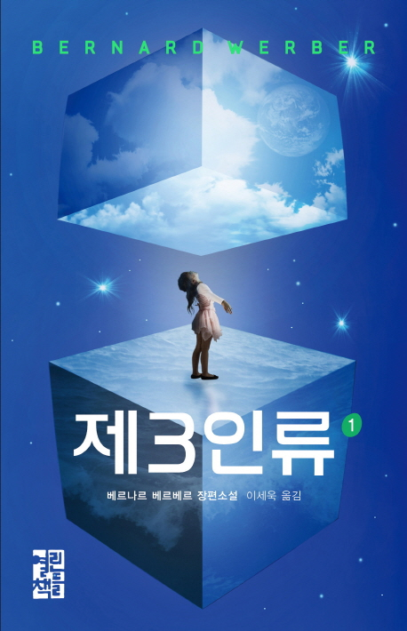

AUTHORS 열린책들 주요 작가
열린책들 주요작가 4인을 소개합니다.
세상 들여다 보기
<프랑스의 천재작가>. 베르나르 베르베르를 두고 어떤 평자가 한 말이다. 그러나 베르베르는 결코 천재 작가가 아니다. 뛰어난 상상력과 과학지식을 바탕으로 한 그의 작품들은 우연의 산물이 아니라 어려서부터 모든 것을 주의 깊게 관찰하고 새로운 시각으로 보려고 노력함으로서 필연적으로 생겨난 결과물이기 때문이다. 한국인이 가장 사랑하는 작가 목록의 첫 머리에 항상 이름을 올리는 베르베르, 이제 베르베르는 그를 발견해 준 한국에서 뿐 아니라 모국인 프랑스에서도 내놓는 책마다 1위에 오르며 남녀노소를 무론하고 다양한 독자의 사랑을 받는 인기 작가로 자리매김했다.
갓 데뷔한 그에게 <천재작가>란 극찬을 듣게 한 소설 『개미』의 시초는 베르베르가 개미의 일하는 모습에 매료되어 더 이상 <개미집을 부수지 않게 된 열두 살 무렵>까지 거슬러 올라간다. 그러나 집필의 직접적 동기가 된 것은 1983년, <뉴스>재단의 콘테스트에서 아크리카 개미에 관한 보고서로 호평을 받으면서 부터다. 곧바로 아프리카 코트디부아르로 가서 <마냥 개미>를 관찰하고 돌아온 그는 120번에 가까운 개작을 거듭한 끝에 1991년 봄, 소설 『개미』를 탈고한다. 그는 『개미』로 <과학과 미래>의 그랑프리와 <팔리시상>을 받았다.
그의 작품들은 인간 중심의 세계관을 벗어나, 다른 눈높이에서 바라 본 세상을 여러 방면에서 제시하고 있다. 베르베르는 개미의 시각에서 인간 문명과의 조우를 그리고 있는 『개미』, 그리고 세계 밖에서 세계를 들여다보게 하는 백과사전인 『상대적이며 절대적인 지식의 백과사전』, 죽음과 삶을 넘낟는 영계 탐사자를 다룬 『타나토노트』, 명상을 통해 자기 내면세계로 안내하는 『여행의 책』, 인간 진화의 수수께끼를 본격적으로 탐구한 과학스릴러 『아버지들의 아버지』 등의 화제작들을 발표하였다.
주요작품
-
개미
2001년 01월 30일 발행
-
신 (1~6권)
2008년 11월 20일 발행
-

제 3인류 (1~6권)
2013년 10월 23일 발행
-

잠 (1~2권)
2017년 06월 30일 발행